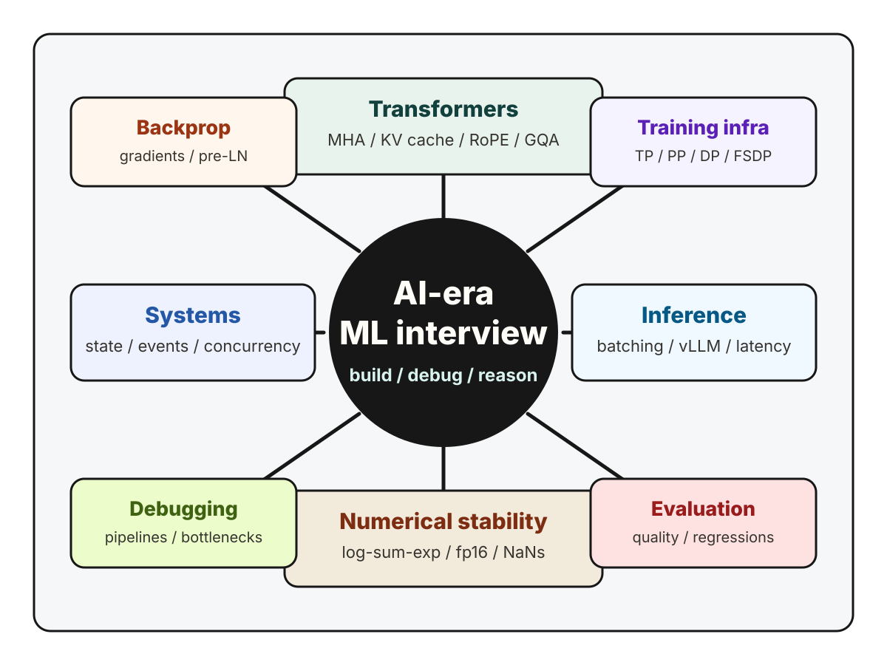

AI interviews / ML systems / 2026
How to prepare for AI-era ML interviews
Modern ML interviews are becoming less about reciting algorithms and more about showing that you can build, debug, and reason through real AI systems.

Over the past few months, I have been studying modern ML and AI systems interview material across frontier-style model work and infrastructure-heavy roles. A pattern kept showing up: the interview loop is changing.
The older ML interview often centered on classical modeling, feature engineering, and a few derivations. Those still matter. But the current AI-era loop increasingly tests whether you can move between code, tensors, training stability, inference latency, and distributed systems without losing the thread.
In other words, the question is no longer only: Do you know the concept? It is also: Can you make the concept work under production constraints?
What you can broadly expect
The exact loop varies by company and level, but modern AI engineering interviews tend to cluster around a few rounds:
- Implementation-heavy coding with state, concurrency, or simulation-style logic.
- Transformer internals, usually without relying on high-level framework abstractions.
- Numerical stability and optimization dynamics.
- ML systems design, especially training and inference infrastructure.
- Debugging scenarios involving data, distributed jobs, model quality, or serving latency.
The most important shift is that these areas are no longer isolated. A transformer implementation question can quickly become an inference-memory question. A training instability question can become a distributed debugging question. A system design question can require both product sense and GPU-utilization intuition.
1. Implementation speed and systems reasoning
A lot of AI engineering work looks like building moderately complex systems quickly, keeping the state model correct, and explaining bottlenecks as they appear. That shows up directly in interviews.
Examples of questions I would prepare for:
- Build a small game or simulation system with clean state transitions.
- Design an event processing pipeline with retries, idempotency, and failure handling.
- Implement a concurrent workflow and explain how you would test race conditions.
- Debug a pipeline where one slow stage causes the whole system throughput to collapse.
The best way to prepare is to practice implementing small systems from scratch under time pressure. Do not only solve isolated algorithm questions. Practice reading your own code as if it were going to run in production.
2. Transformer internals are becoming table stakes
For AI roles, it is increasingly important to understand transformer implementation details without hiding behind `torch.nn.MultiheadAttention` or a HuggingFace abstraction.
You should be comfortable with:
- Multi-head attention and causal masking.
- Stable softmax and tensor-shape reasoning.
- KV-cache updates during autoregressive decoding.
- RoPE and positional encoding behavior.
- Grouped Query Attention and Multi-Query Attention tradeoffs.
A good interview answer usually does not stop at "this is how attention works." It also explains why the implementation matters for memory bandwidth, inference throughput, and correctness during decoding.
3. Numerical stability is underrated
Numerical stability questions look deceptively simple. In real training runs, they are often the difference between a model that trains and a model that silently falls apart.
Topics I would treat as core:
- Log-sum-exp and stable softmax.
- fp16 and bf16 failure modes.
- NaNs from attention logits, normalization, data, or optimizer settings.
- LayerNorm epsilon, gradient scaling, and gradient clipping.
- Loss spikes and when to restart versus diagnose.
When preparing, do not just memorize the trick. Implement the unstable version, make it fail, then fix it. That kind of muscle memory is exactly what helps during debugging interviews.
4. Backprop still matters
Even in a systems-heavy interview loop, deep understanding of backprop is still high signal. Interviewers often want to know whether you understand optimization dynamics rather than only formulas.
Examples:
- Derive softmax plus cross entropy backward.
- Explain gradient flow through attention scores and values.
- Explain why residual connections help optimization.
- Compare pre-LN and post-LN transformer stability.
My favorite way to prepare here is pen-and-paper derivation first, then a tiny NumPy or PyTorch implementation to verify the gradient numerically.
5. ML systems design is more infrastructure-heavy now
ML system design used to often mean recommender systems, ranking, feature stores, and evaluation. Those are still useful, but AI infrastructure interviews increasingly go deeper into training and serving.
Areas worth preparing:
- Data parallelism, tensor parallelism, pipeline parallelism, ZeRO, and FSDP.
- NCCL bottlenecks, GPU utilization, and activation checkpointing.
- FlashAttention and memory hierarchy.
- vLLM, paged attention, continuous batching, and inference scheduling.
- Distributed checkpointing, preemption, monitoring, and recovery.
In this round, it helps to start with a clear structure. State assumptions, define the workload, identify bottlenecks, and then walk through training or serving architecture layer by layer.
Sample questions to calibrate depth
These are representative of the level of detail I would practice:
- How does FSDP differ from standard data parallelism?
- What is Grouped Query Attention and why is it used in modern LLMs?
- What is FlashAttention and why is it important?
- How do you debug a training job that produces NaN losses?
- What is the KV-cache and why is it critical for inference efficiency?
- What is continuous batching and why does it matter for serving?
Notice the pattern: each question looks conceptual at first, but a strong answer quickly becomes practical.
How I would prepare
If I were structuring preparation from scratch, I would avoid bouncing randomly between papers, blog posts, and interview questions. I would instead use a weekly plan:
- Spend a few days revisiting ML fundamentals and derivations.
- Implement attention, masking, RoPE, KV-cache, and decoding from scratch.
- Practice numerical stability by intentionally breaking small examples.
- Study distributed training and inference serving as systems, not vocabulary lists.
- Do mock design rounds where you force yourself to state assumptions and tradeoffs.
The goal is not to know every paper. The goal is to become fluent enough that, when the interviewer changes the constraint, you can reason from first principles instead of reciting a memorized answer.
A resource I recommend
I have been organizing practice around CrackML Interview. It covers transformers, distributed training, ML infrastructure, research engineering, performance intuition, debugging, numerical stability, and multimodal systems.
If you are preparing for AI-era ML interviews, I highly recommend going through some of the questions there. I use it as a structured way to turn scattered topics into concrete practice, and it has been effective for building the implementation-level reasoning these interviews increasingly expect.
Final takeaway
The modern ML interview is becoming more honest about the work. Real AI engineering is interdisciplinary, stateful, numerically fragile, and performance-sensitive. The strongest candidates are not just people who know the concepts. They are people who can make those concepts work.